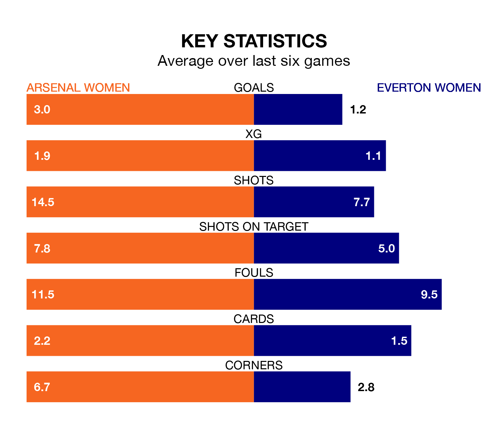

Arsenal Women host Everton Women in Saturday's early match at Meadow Park looking to bounce back from defeat last time out in FA Women's Super League.
The Gunners, who sit third in the league after 10 games, fell to a 1-0 away defeat to Tottenham Hotspur Women on December 16.
They face an Everton side who also lost their last match, a 4-1 defeat to Manchester City Women, and who sit seventh in the table.
With nine goals in 10 games so far this season, Everton are the league's second-lowest scorers with 0.9 goals per game. And they are conceding more than average, letting in 19 goals at a rate of 1.9 per game.
Arsenal, meanwhile, are above average scorers, with 2.4 goals per game, compared to a league average of 1.7. They have conceded 1.0 goal per game.
In the last 10 years, Arsenal and Everton have played each other on 15 occasions. Arsenal won all of them.
On average, the Gunners scored 2.5 goals and the Toffees 0.5 in those matches.
Their last meeting was on May 17, when Arsenal won 4-1 away.
In Manuela Zinsberger, the Gunners can rely on one of the league's safest pair of hands. She has kept two clean sheets in her nine appearances this season, and only two other 'keepers – Manchester United Women's Mary Earps and Manchester City Women's Khiara Keating – have been able to prevent the opposition scoring on more occasions in FA Women's Super League.
In the Toffees's net, Courtney Brosnan also has two clean sheets in eight games. She has conceded a goal every 51 minutes, twice as often as the 101 minutes between goals for Zinsberger.
The home team are in fantastic form in FA Women's Super League, with five wins and one loss from their last six games.
With two wins and two draws over that period, the visitors' form is much worse – they have taken eight points from 18, compared to Arsenal's 15.
Updated: 14:53 (UTC), 16/01/24